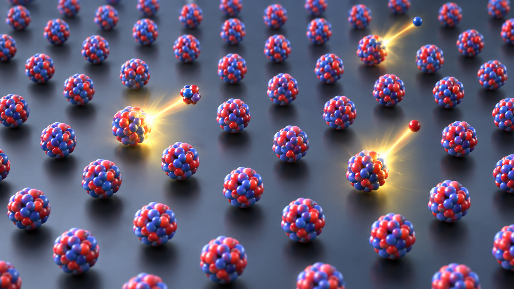
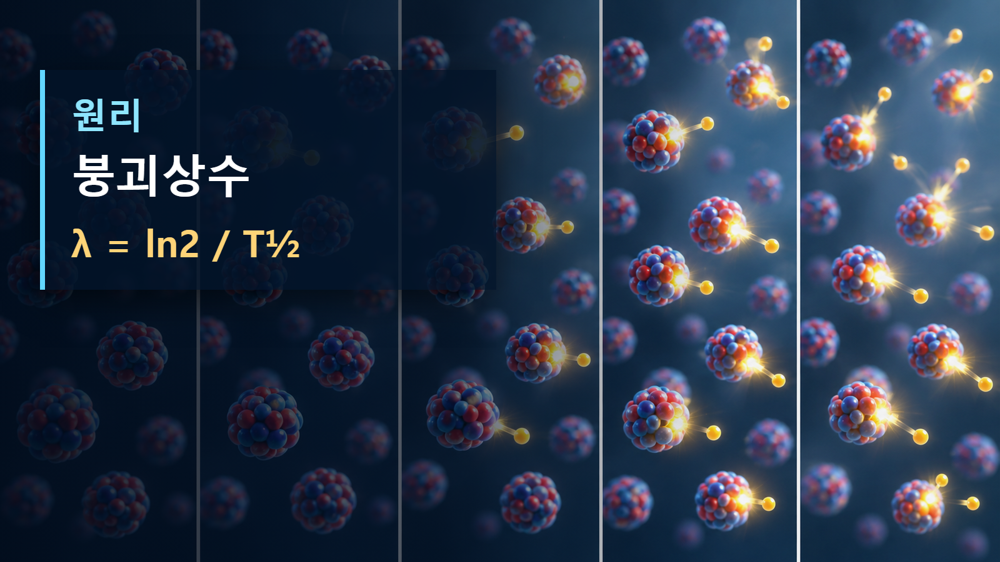

방사성붕괴와 시간 · 048
붕괴상수
한 핵이 단위시간에 붕괴할 확률

붕괴상수 λ는 아직 붕괴하지 않은 개별 핵이 단위시간에 붕괴할 확률을 나타낸다. 특정 핵의 정확한 붕괴 시각은 예측할 수 없다.
개념의 정의
붕괴상수 λ는 아직 붕괴하지 않은 개별 핵이 단위시간에 붕괴할 확률을 나타낸다. 특정 핵의 정확한 붕괴 시각은 예측할 수 없다. 여기서 구분해야 할 것은 눈에 보이는 현상과 원자핵 수준의 원인이다. 같은 용어라도 핵종, 입사에너지, 관측시간에 따라 결과가 달라질 수 있으므로 먼저 계의 경계와 보존되는 양을 정해야 한다. 붕괴상수 λ는 아직 붕괴하지 않은 핵 하나가 단위시간에 붕괴할 확률을 나타내며 단위는 시간의 역수다.
작동 원리와 보존관계
이 현상을 가장 간단히 나타내는 관계는 λ = ln2 / T½이다. 이 식이나 관계는 반응 전후의 질량·전하·에너지·운동량 가운데 무엇이 유지되고 무엇이 다른 형태로 옮겨 가는지 보여 준다. 실제 핵은 여러 에너지준위와 반응경로를 가지므로 식은 출발점이며, 핵종별 평가자료를 함께 사용해야 한다.

단계별 예시 1
첫 단계에서는 초기 핵종과 입사입자 또는 초기 재고를 정한다. 둘째 단계에서는 λ = ln2 / T½에 맞추어 변한 양을 추적한다. 셋째 단계에서는 방출입자와 딸핵 또는 남은 재고가 검출기와 물질에서 만드는 효과를 해석한다. 반감기가 짧을수록 λ가 크고 같은 수의 핵에서 초당 더 많은 붕괴가 일어난다. 이 예시는 미시적인 한 사건을 거시적인 열·계수율·영상 신호로 연결하는 방법을 보여 준다.
단계별 예시 2
조건이 달라지는 두 번째 예시에서는 시간척도와 측정경계를 함께 본다. 반감기 8일인 I-131의 λ는 ln2/8일≈0.0866 day⁻¹이다. 같은 핵종 1,000개라면 처음 하루의 기대 붕괴수는 단순히 86.6개가 아니라 지수감소를 적용해 계산한다. 숫자를 대입하는 것만으로 끝내지 않고 결과가 사건당 값인지, 초당 값인지, 시료 전체의 평균인지 확인해야 한다. 이 구분이 없으면 같은 수치도 실제보다 크게 또는 작게 해석될 수 있다.
| 구분 | 핵심 값·변화 | 해석 의미 |
|---|---|---|
| 붕괴상수 λ | 개별 확률률 | 시간⁻¹ |
| 핵 수 N | 남은 재고 | 시간에 따라 감소 |
| 방사능 A=λN | 초당 붕괴수 | Bq |
원자력공학의 실제 적용
방사능, 반감기, 핵종재고 감소식을 하나로 연결한다. 설계자는 발생원, 이동경로, 에너지 침적, 검출 또는 열제거의 순서로 문제를 나눈다. 운전자료와 계산값이 다를 때에는 핵자료의 불확실성, 기하형상, 물질조성, 검출효율과 시간응답을 차례로 확인한다. 이 과정은 원자로물리뿐 아니라 방사선방호, 핵의학, 연료관리와 계측에서도 같은 논리로 적용된다.
오해와 적용 한계
λ는 시료가 오래되면 작아지는 소모속도가 아니다. 외부 조건이 핵상태를 바꾸지 않는 한 같은 핵종의 λ는 일정하고, 전체 붕괴수만 남은 핵 수에 비례해 감소한다. 또한 그림 속 입자 크기와 거리는 실제 비율이 아니며, 한 장면은 가능한 여러 경로 가운데 핵심만 나타낸다. 정밀 판단에는 최신 핵자료와 실험조건을 사용해야 한다.
핵심 정리
붕괴상수의 핵심은 한 핵이 단위시간에 붕괴할 확률을 조건·시간척도·관측량과 함께 읽는 데 있다. 먼저 붕괴상수 λ는 아직 붕괴하지 않은 개별 핵이 단위시간에 붕괴할 확률을 나타낸다. 특정 핵의 정확한 붕괴 시각은 예측할 수 없다. 다음으로 λ = ln2 / T½이 무엇을 연결하는지 확인하고, 계산 결과가 사건 하나의 값인지 시료 전체의 평균인지 구분한다. 마지막으로 방사능, 반감기, 핵종재고 감소식을 하나로 연결한다. 이 세 단계를 지키면 비유에 머물지 않고 실제 원자력공학 문제로 개념을 확장할 수 있다. 반대로 핵종과 에너지범위, 측정조건을 생략하면 같은 공식도 잘못 적용될 수 있으므로 출처의 적용범위를 함께 확인해야 한다. 계산값을 전달할 때에는 사용한 핵종, 초기조건, 단위와 근사 가정을 함께 기록해야 다른 사람이 같은 결과를 재현하고 판단의 한계를 확인할 수 있다.